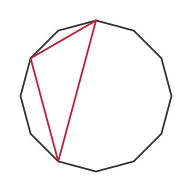
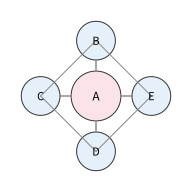

ホーム ＞ 数学A ＞ 場合の数（順列・組合せ）
別冊章末問題の解答
1. 0, 1, 2, 3, 5 の5個の数字から異なる4個を選んでできる4桁の整数のうち、5の倍数は何個あるか。
（例題1の型）
【答案】
\[42\ \text{個}\]答
2. 男子6人、女子6人が円形のテーブルに座る。(1) 全部の座り方 (2) 男女が交互になる座り方は何通りか。
（例題2の型）
【答案】
\[(1)\ 39916800\quad(2)\ 86400\]答
3. 10人を (1) 5人、3人、2人の3組に分ける方法 (2) 4人、4人、2人の3組に分ける方法は何通りか。
（例題3の型）
【答案】
\[(1)\ 2520\quad(2)\ 1575\]答
4. 東へ6区画、北へ5区画進む A→B の最短経路のうち、A から東へ3区画、北へ3区画進んだ点 P を通らないものは何通りか。
（例題4の型）
【答案】
\[262\ \text{通り}\]答
5. \(x+y+z=15\) について (1) 0以上の整数解 (2) \(x\geqq2,\ y\geqq3,\ z\geqq4\) の整数解の個数を求めよ。
（例題5の型）
【答案】
\[(1)\ 136\quad(2)\ 28\]答
6. 5 人が円形のテーブルに座る。特定の2人 \(A,\ B\) が隣り合わない座り方は何通りあるか。
全体（円順列）
\(n=5\) 人の円順列は \((5-1)!=24\) 通り。
A と B が隣り合う場合
\(A,B\) をひとまとめにして \(4\) 人の円順列、中の並びが 2 通り。
\[(5-2)!\times2=12\]引く
\[24-12=12\]（例題6の型）
【答案】
\[12\]答
7. 文字 \(A\ A\ B\ B\ B\ C\ C\) をすべて使って1列に並べる。\(A\) どうしが隣り合わない並べ方は何通りあるか。
A 以外を先に並べる
\(B,\ C\) の並べ方は \(10\) 通り（同じ文字を区別しない）。
A を入れる場所
\(5\) 文字の前後・間の \(6\) か所から \(2\) か所を選んで \(A\) を1つずつ入れる。
\[{}_{6}\mathrm{C}_{2}=15\]積
\[10\times15=150\]（例題7の型）
【答案】
\[150\]答
8. 正12角形の頂点から3つを選んで三角形をつくる。正12角形の辺を1本も共有しない三角形は何個できるか。
全体
\({}_{12}\mathrm{C}_3=220\) 通り。

辺を2本共有する三角形
隣り合う3頂点 \(12\) 通り。
辺を1本だけ共有する三角形
辺 \(12\) 本のそれぞれに、残りの頂点（その辺の両端と隣り合わない）\(8\) 通り。
\[12\times8=96\]引く
\[220-12-96=112\]（例題8の型）
【答案】
\[112\]答
9. 図のように、中央の領域 \(A\) のまわりに \(4\) 個の領域が円環状にならんでいる。隣り合う領域は異なる色で塗る。\(6\) 色を使うとき（使わない色があってもよい）、塗り方は何通りあるか。
図の読み取り
中央 \(A\) は周りの \(4\) 個すべてと隣り合い、周りの領域は円環状に隣り合う。

中央の色
\(A\) の色は \(6\) 通り。残りは \(5\) 色から選ぶ。
周りの環の塗り方
\(4\) 個を円環に、隣どうし異なる色で、\(5\) 色から。\(B\to C\to\cdots\) と順に決めると（最後だけ場合分け）
\[(5-1)^{4}+(-1)^{4}(5-1)=260\]積
\[6\times260=1560\]（例題9の型）
【答案】
\[1560\]答
10. 各位の数字の和が \(18\) である3けたの自然数は何個あるか。
方程式にする
百の位 \(a\)（\(1\leqq a\leqq9\)）、十の位 \(b\)、一の位 \(c\)（\(0\leqq b,c\leqq9\)）。
\[a+b+c=18\]\(a'=a-1\) で非負にする
\[a'+b+c=17\quad(a'\geqq0,\ b\geqq0,\ c\geqq0)\]重複組合せ：
\[{}_{3}\mathrm{H}_{17}={}_{19}\mathrm{C}_{2}=171\]上限を超える場合を引く
\(a'\geqq9\)：残り \(8\) を配る \({}_{3}\mathrm{H}_{8}=45\)。\(b\geqq10\)、\(c\geqq10\)：それぞれ \(36\)。2つ同時に超えることはない（和が \(17\) 以下のため）。
\[171-45-36-36=54\]（例題10の型）
【答案】
\[54\]答